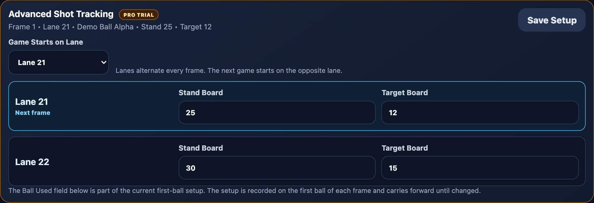

PRO FEATURE / 01
Two lanes.
Two lanes.
Two different lines.
The two lanes in your pair don't always play the same. Track separate stand and target board positions for each physical lane, and record the setup used on each first ball.

LANE 21 / LANE 22